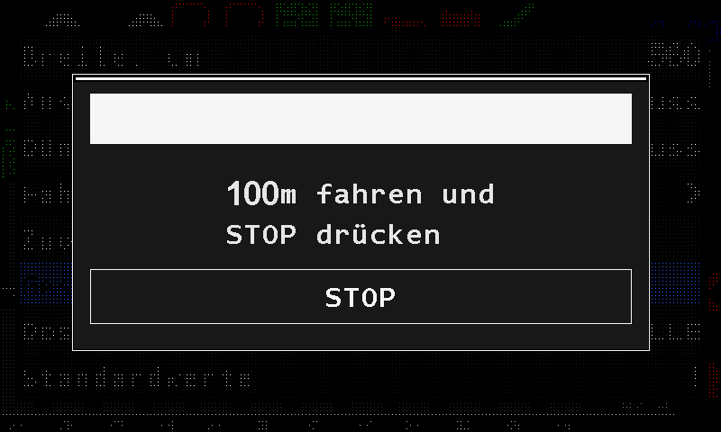
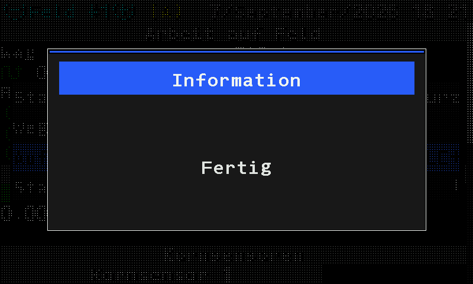

Geschwindigkeitssensor kalibrieren
Fahren Sie 100 m Messstrecke ab, damit das Panel die Impulszahl des Fahrgeschwindigkeitssensors korrigiert.
Die Kalibrierung korrigiert die Impulszahl des Geschwindigkeitssensors anhand einer bekannten Strecke. Stellen Sie vor dem Start „Impulse“ und „Durchmesser, cm“ des Sensors ein (Fahrgeschwindigkeitssensor) – die Kalibrierung korrigiert die Impulszahl, sie kann sie nicht erfinden. Sie benötigen die Ebene „Agronom“ (Agronomen-Ebene aktivieren).
Stecken Sie auf ebenem Boden 100 m ab und stellen Sie die Maschine an den Start.
Öffnen Sie „Einstellungen“ → „Sämaschinen-Parameter“, wählen Sie „Geschwindigkeitskalibrierung“ und drücken Sie „MENU“. Das Panel zeigt „100m fahren und STOP drücken“ mit einer einzelnen Taste „STOP“.

Das Fenster der Geschwindigkeitskalibrierung. Fahren Sie die abgesteckte Strecke und halten Sie am Ende an.
Berühren Sie „STOP“. Das Panel zeigt „Fertig“ und schließt das Fenster von selbst.

Das Panel bestätigt mit „Fertig“.
Die Strecke ist fest auf 100 m eingestellt; das Panel fragt sie nicht ab. Nach „STOP“ wartet es eine halbe Sekunde, bevor es den Zähler ausliest, und prüft in diesem Moment die Verbindung noch einmal – ein Sensor, der auf dem letzten Meter aussetzt, wird als Verbindungsverlust gemeldet, nicht als schlechtes Ergebnis.
Wenn es nicht funktioniert
| Das Panel zeigt | Bedeutung |
|---|---|
| „Kein Geschwindigkeitssensor“ | Im Profil steht kein Geschwindigkeitssensor. Die Kalibrierung startet nicht. |
| „Keine Verbindung zum Sensor! Kalibrierung abgebrochen!“ | Der Sensor antwortet nicht. |
| „Sensor nicht überwacht! Kalibrierung abgebrochen!“ | Der Sensor ist aus der Überwachung genommen. Nehmen Sie ihn in die Überwachung (Sensor in die Überwachung nehmen oder herausnehmen). |
| „FEHLER! Traktor hat sich nicht bewegt!“ | Der Zähler hat sich nicht bewegt: Der Sensor hat überhaupt keine Impulse geliefert – kein ungenauer Wert, sondern gar keiner. Prüfen Sie den Sensor und sein Kabel. |
| „Kalibrierung abgebrochen!“ | Das Fenster wurde auf anderem Weg als mit „STOP“ geschlossen. Nichts hat sich geändert. |
Ihre Maschine tut etwas, das diese Seite nicht beantwortet? Schreiben Sie an support@agriwelt.com — es antwortet ein Ingenieur.